| 类型 | 规律 |
|---|---|
| HX / Lucas 速度 | 3° ≈ 烯丙基/苄基 > 2° > 1° （走 SN1，可能重排） |
| Na 反应活泼性 | CH₃OH > 1° > 2° > 3° （酸性决定） |
| 氧化难易（醛/酸/酮） | 1°+CrO₃/Py → 醛；1°+K₂Cr₂O₇/H₂SO₄ → 酸；2° → 酮；3° 不动 |
| 酚 + Br₂ 溶剂效应 | H₂O → 多溴（电离活化）；CS₂ → 单溴（不电离） |
| 磺化温度 | 20℃ 邻（动力学）；100℃ 对（热力学） |
| 构型保留 vs 翻转 | TsCl/Py & SOCl₂/Py 保留；PBr₃ & SN2 翻转；HX & SN1 消旋+可能重排 |
| 看到 HCl-ZnCl₂ 骨架变 | → Wagner-Meerwein 1,2-迁移（H 或 CH₃ 跳过来稳碳正离子） |
| 烯丙基苯醚 + Δ | → Claisen 重排，烯丙基跨过 O 跳到邻位 |
| 1,2-二醇 + H⁺ | → Pinacol 重排：失水成酮 + 1,2-迁移（看立体！） |
| 醚 + HI/过量 | SN2 进攻位阻小那一侧 → 两段都成卤代物（链醚两当量、环醚开环成二碘） |
| 鉴别四件套 | FeCl₃（验酚）/ Lucas（验醇级）/ HIO₄（验邻二醇）/ Na（验 OH） |
| 习题 | 考点 | 跳转 |
|---|---|---|
| 题 1 | 命名（醇/酚/醚/硫醇/环氧） | 10.1 命名 |
| 题 2 | 丁醇 + 8 试剂 | 10.3.附 丁醇 8 反应表 |
| 题 3 | 邻甲酚 + 10 试剂 | 10.4 酚的 10 反应 |
| 题 4(1)-(2) | 普通氧化、Williamson | 10.3⑥ / 10.4② |
| 题 4(3)(4) | Williamson 经典陷阱 | 10.5① |
| 题 4(5) | 共轭脱水 | 10.3⑤ |
| 题 4(6) | Oppenauer 氧化 | 10.3⑥ |
| 题 4(7)(8) | 醚的 HI 裂解 / 自氧化 | 10.5②③ |
| 题 4(9) | 分子内 Williamson 关环 | 10.5① |
| 题 4(10) | 新戊醇重排 | 10.6① |
| 题 4(11) | TsCl + NaI 立体化学 | 10.3③ |
| 题 4(12) | m-甲酚 + Br₂/H₂O | 10.4④ |
| 题 4(13)(14) | 频哪醇重排立体之谜 | 10.6③ |
| 题 5(1)~(8) | 8 类排序题 | 10.7 排序套路 |
| 题 6(1) | 萘的磺化-碱熔 | 10.4⑩ |
| 题 6(2) | Claisen 4 步合成 | 10.5⑤ |
| 题 6(4) | HIO₄ + NaBH₄ | 10.3⑥ |
| 题 6(5)(7) | 醚 HI 裂解 | 10.5② |
| 题 6(6) | 环氧 + Grignard | 10.5④ |
| 题 7 | 合成题（磺化-碱熔 / F-C / Williamson） | 10.4⑩ + 10.4⑨ |
| 题 8 | 化学鉴别 | 10.8 鉴别方法 |
| 题 9(1)(2)(3)(4) | 机理：重排 / 环关 / SN1' | 10.6 重排 |
| 题 10(1)(2) | 醚的酸催化裂解 | 10.5② |
| 题 11 | C₈H₉OBr 推断 | 10.9 推断套路 |
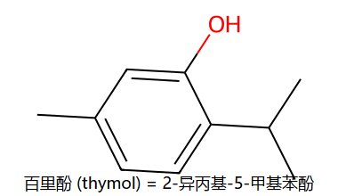
OH = C1；异丙基 = C2；甲基 = C5。这是百里香精油的主成分。
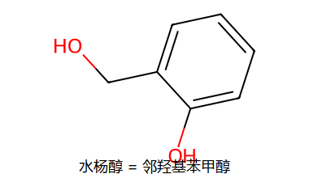
苯环上同时挂 —OH 和 —CH₂OH，二者在邻位。水杨苷的水解产物。
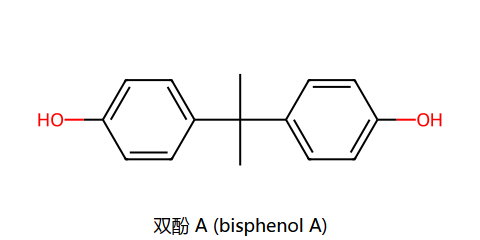
中心 C 上挂 2 个 CH₃ + 2 个对羟基苯基。PC 塑料和环氧树脂的核心单体。
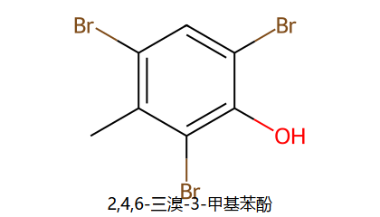
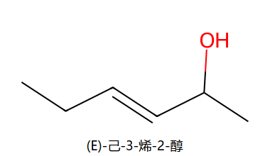
OH 在 C2；C3=C4 双键；E 表示同优先级取代基在双键两侧。
| 性质 | 大小顺序 | 原因 |
|---|---|---|
| 沸点 | 多元醇 > 一元醇 > 酚 > 醚 > 烃 | 分子间氢键越多 / 越强 → 沸点越高；醚没有 O—H，没有自身氢键 |
| 水溶性 | 低分子醇 > 酚 > 醚 ≫ 高分子醇 | 羟基与水形成氢键；分子量太大时长烃链占主导，溶解度降低 |
| 酸性 | 酚 > H₂O > 醇 > 醚 | 酚负离子被苯环共振稳定（电荷分散到环上）；醇负离子只能靠 +I 烷基稳定；醚没有酸性 H |
记住一个统一思路：醇的所有反应要么动 O—H，要么动 C—O。前者轻松（如成醇钠、酰化、Williamson），后者要先把 OH "转换" 成好的离去基才能发生取代/消除。
速度由碳正离子稳定性决定：
3° ≈ 烯丙基/苄基 > 2° > 1°
| 醇 | 反应时间 | 现象 |
|---|---|---|
| 3° 醇 | 立即 | 溶液立刻变浑浊 |
| 2° 醇 | 5~10 分钟 | 慢慢变浑浊 |
| 1° 醇 | 室温几乎不动 | 需加热才反应 |
| 烯丙醇/苄醇 | 立即/几分钟 | 碳正离子有共振稳定 |
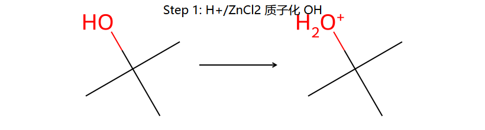
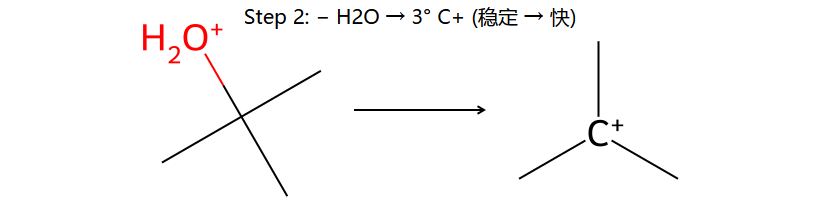
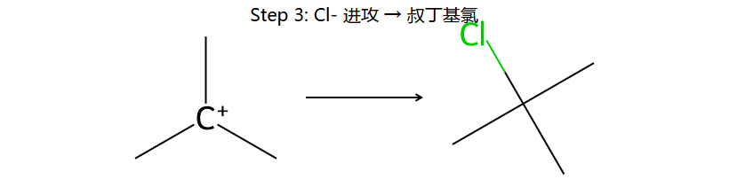
为什么 3° 醇立刻浑浊：第 2 步生成的叔碳正离子非常稳定，反应可观速度发生；产物 RCl 不溶于水/盐酸 → 浑浊出来。1° 醇生成不稳的 1° C⁺，几乎不走。
ZnCl₂ 的角色：路易斯酸，配位 OH 让它变成更好的离去基（强化质子化效果）。
(A) CH₃CH=CH-CH₂OH 烯丙醇 (烯丙基 1°)；(B) CH₂=CH-CH₂CH₂OH 远端双键 (普通 1°)；(C) CH₃CH₂CH(OH)CH₃ 2° 醇
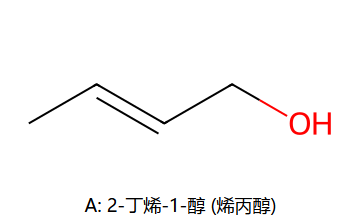
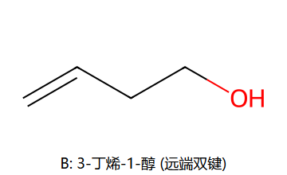
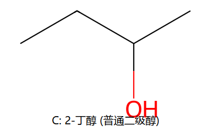
A 生成烯丙基阳离子，可通过共振分散电荷：
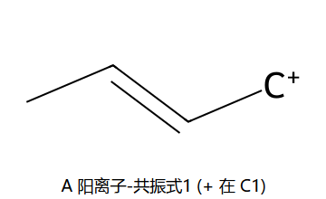
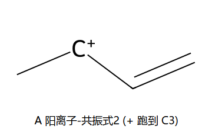
B 生成的阳离子在端基 1° 位置，双键离得太远帮不上忙。C 是普通 2°。
答案：A > C > B（A 最快，B 室温几乎不动）
| 试剂 | 得到 | 构型 | 典型用法 |
|---|---|---|---|
| PBr₃ | R—Br | 翻转 | 清洁的伯/仲溴代 |
| SOCl₂ / 吡啶 | R—Cl | 保留 (SNi 机理) | 清洁的伯/仲氯代 |
| HX / ZnCl₂ | R—X | SN1 可能重排 | 主要用于鉴别 / 简单制备 |
反应发生在 S 原子上，不在 C 上 → 手性碳构型保留。然后让 OTs 走 SN2 / SN1，化学家可以精准控制立体化学。
题目：(S)-1-氘代-1-丙醇 ──TsCl/吡啶──► ?? ──NaI/丙酮──► ??
大白话讲：
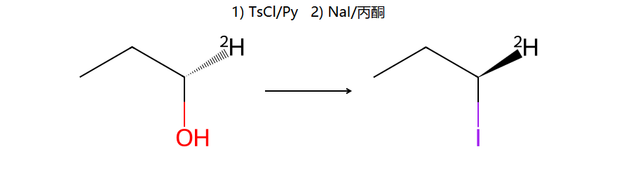
D 的作用：制造手性中心（C 上挂 4 个不同基团 = C₂H₅、OH、H、D），方便用旋光仪观测构型变化。
比喻：旧 OH 像生锈的锁——直接换不动；TsCl 是润滑剂把锁变松（变 OTs），NaI 一推就掉，新锁 (I) 装上。
速度由醇的酸性决定：
CH₃OH > 1° > 2° > 3°
叔醇的 OH 因为周围烷基阻碍 Na 接触 + 烷基 +I 效应降低酸性，反应最慢。
规则：
三者都是 1° 醇，差别在苯环离 OH 多远：
A 脱水：失水后 1° 阳离子可经 1 次 H 迁移变成苄基阳离子（共振稳定） → 失 H → 苯乙烯（直接共轭烯烃）→ 反应最快
B 脱水：要经过 2 次 H 迁移才能到苄基阳离子 → 给共轭烯（β-甲基苯乙烯）→ 慢于 A
C 脱水：无苯环可借共振稳定 → 产物 = 乙烯基环己烷（非共轭）→ 最慢
答案：A > B > C（共轭产物最稳定，反应越靠它越快）
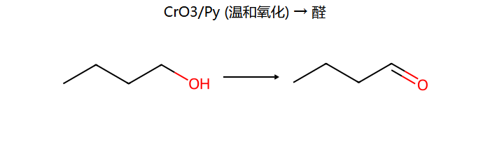
CrO₃/吡啶 (Collins 试剂) 和 PCC 都是温和氧化剂，不会过度氧化醛。
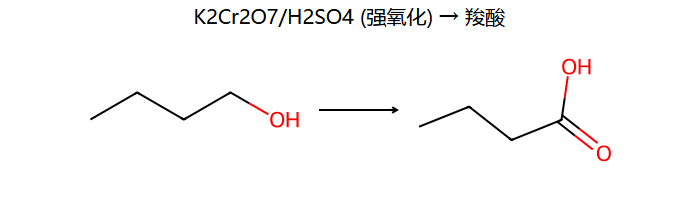
强氧化条件下，醛会被进一步氧化成羧酸。
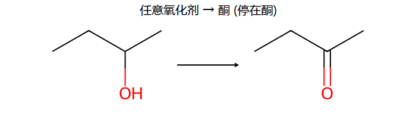
酮没有 α-C—H 可被氧化（除非断 C—C，需更激烈条件）。
叔醇的 α-C 上没有 H，常规氧化剂动不了。只有 KMnO₄ 在剧烈条件下才会断 C—C 链。
HIO₄（高碘酸）是个"剪刀"——专剪相邻两 C 都挂 OH 的 C—C 键，给两个羰基。
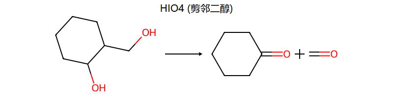
记法：邻二醇 + HIO₄ → 两个 C=O（醛或酮，看原 C 上的 H 数）
反应不会切普通的 C—C（必须 2 个 OH 紧贴）。常用于鉴别邻二醇。
试剂 [(CH₃)₃CO]₃Al（三叔丁氧基铝，aluminum tri-tert-butoxide）+ 过量丙酮。把仲醇变酮，同时不动 C=C 双键（化学选择性极好）。
机理：丙酮（C=O）做氢受体，仲醇做氢供体，铝催化两者氢转移 → 仲醇变酮、丙酮变 2-丙醇。
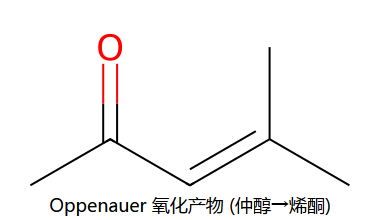
典型用于含双键的仲醇氧化（见习题 4(6)）。
| 醇级 | 温和氧化 (CrO₃/Py, PCC) | 强氧化 (K₂Cr₂O₇/H₂SO₄) |
|---|---|---|
| 1°（伯醇） | 醛 R—CHO | 羧酸 R—COOH |
| 2°（仲醇） | 酮 R—CO—R' | 酮（停在酮） |
| 3°（叔醇） | 不反应 | 剧烈条件断 C—C |
习题 2：丁-1-醇 (1°) 和丁-2-醇 (2°) 与 8 种试剂的产物对比。
| 试剂 | 丁-1-醇 → 产物 | 丁-2-醇 → 产物 |
|---|---|---|
| HBr | 1-溴丁烷 | 2-溴丁烷 |
| PBr₃ | 1-溴丁烷 | 2-溴丁烷 (不重排) |
| SOCl₂/吡啶 | 1-氯丁烷 | 2-氯丁烷 (不重排) |
| Na | 正丁醇钠 + ½H₂ | 仲丁醇钠 + ½H₂ |
| H₂SO₄, Δ | 1-丁烯 | 2-丁烯 (Zaitsev) |
| CrO₃/吡啶 | 丁醛 (停在醛) | 丁酮 (2-丁酮) |
| K₂Cr₂O₇/H₂SO₄ | 丁酸 (强氧化到酸) | 丁酮 (酮不再氧化) |
| ZnCl₂/HCl (Lucas) | 1-氯丁烷 (慢) | 2-氯丁烷 (5-10min) |
具体每个反应的真结构图，见 第10章_丁-1-醇与丁-2-醇的八种反应.md 笔记文件。
酚的特点：苯环 O 上的 H 可电离（酸性比醇强 ~10⁶ 倍）→ 苯氧负离子是强亲核试剂；同时 O 给苯环推电子，使邻/对位强烈活化（亲电取代极易）。
苯酚是弱酸 (pKa ≈ 10)，可与 NaOH 反应：
C₆H₅—OH + NaOH → C₆H₅—O⁻Na⁺ + H₂O
但 pKa 比碳酸 (≈6.4) 大，不与 NaHCO₃ 反应（常用于和羧酸区分）
苯氧负离子的稳定性：负电荷可共振分散到苯环上的 o/p 位。
这是经典制备芳醚的方法。R-X 必须是 1° 或 2°（3° 卤代会走 E2 消除而不取代）。
常用 R-X：CH₃I、CH₃Br、PhCH₂Br（苯甲基溴/苄基溴）、烯丙基氯等。
也可以用 (CH₃)₂SO₄（硫酸二甲酯，常用为 OH → OCH₃ 的甲基化试剂）。
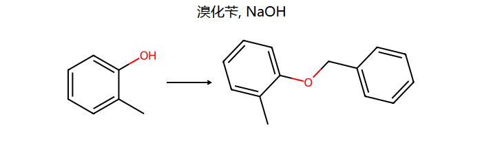
用乙酸酐 (CH₃CO)₂O 或乙酰氯 CH₃COCl + 吡啶。
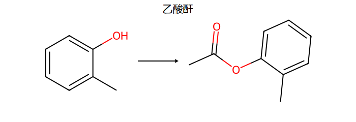
水是极性质子溶剂，能电离酚成苯氧负离子（活化能力 ↑10⁶）。Br₂ 一次性打到所有 o/p 位。
典型：苯酚 + Br₂/H₂O → 2,4,6-三溴苯酚（白色沉淀，定量实验）。
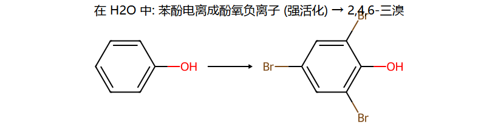
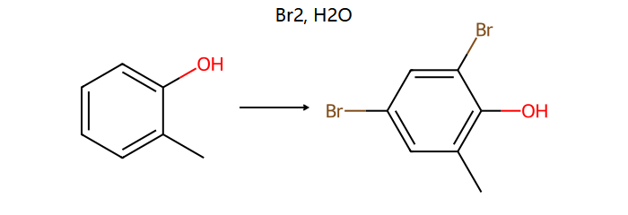
CS₂ 是非极性溶剂，不能电离酚，反应缓和，只上一个 Br。位置：对位为主（位阻小），邻位次之。
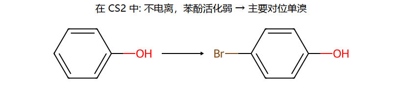
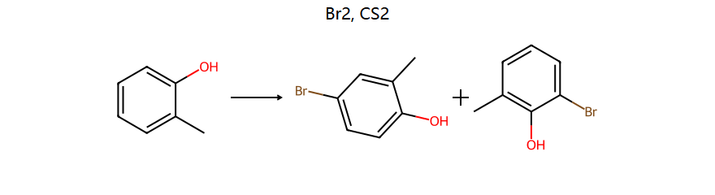
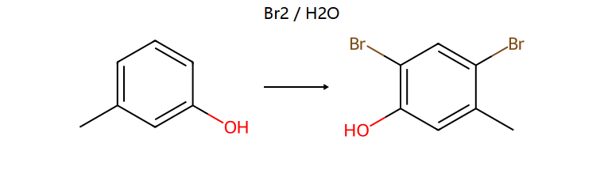
底物 m-甲酚：OH 在 C1，CH₃ 在 C3（meta）。
活化位置分析：OH 强活化 C2、C4、C6；CH₃ 也活化 C2、C4、C6（其 o/p 位）。三个位置都被双重活化。
位阻决定取舍：C2 夹在 OH 和 CH₃ 中间 → 最拥挤；C4 和 C6 都比较"开放"。
所以 Br 进入 C4 和 C6。按最低位次原则重新编号 → 2,4-二溴-5-甲基苯酚。
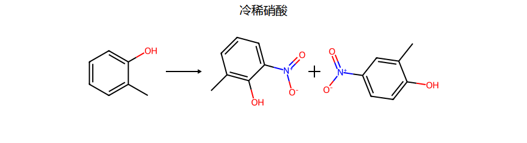
因为酚太活泼，不用浓 HNO₃（会过度氧化）。冷稀就够了。
| 温度 | 位置 | 原因 |
|---|---|---|
| 20°C (低温) | 邻位 (o-) | 动力学控制 —— 邻位 TS 能量低，反应快 |
| 100°C (高温) | 对位 (p-) | 热力学控制 —— 磺化可逆，邻→对异构，对位产物位阻小更稳定 |
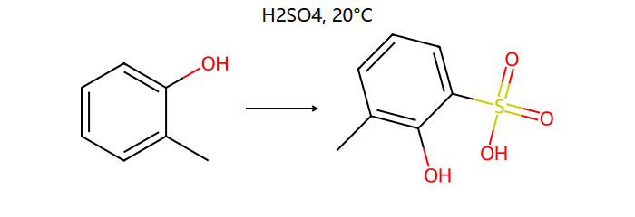
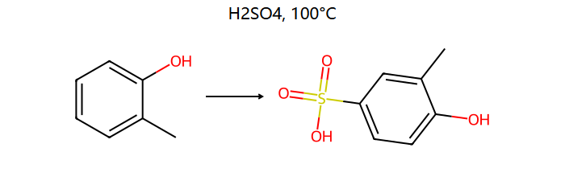
酚 + FeCl₃ 水溶液 → 紫色 / 蓝紫 / 红色配合物。这是酚类的特征反应，鉴别题首选。
原理：酚的 OH 与 Fe³⁺ 形成配合物 [Fe(OAr)₆]³⁻。
注意：1,3-二酮等也能与 FeCl₃ 显色，但一般本科水平里"FeCl₃ 显色 = 酚"。
苯环被加氢成环己烷，OH 保留：
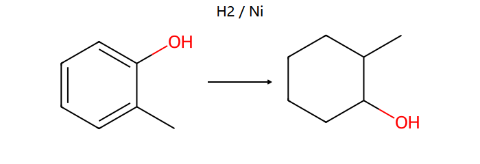
典型：苯酚 → 环己醇；邻甲酚 → 2-甲基环己醇。
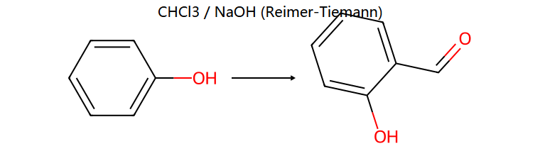
用于给苯环上引入—CHO（醛基），位置选邻位。产物例：苯酚 → 水杨醛 (邻羟基苯甲醛)。
机理：CHCl₃ + OH⁻ 生成 :CCl₂ 卡宾，卡宾进攻苯酚的邻位 → 三氯甲基中间体 → 水解成 CHO。
酚（或酚醚）+ AlCl₃ + RCl 或 RCOCl → 邻/对烷基（或酰基）酚。
问题 7(8) 中 间苯二酚 (1,3-苯二酚) + CH₃(CH₂)₃COCl / AlCl₃ → 4-戊酰基-1,3-苯二酚（= 2,4-二羟基苯戊酮）。
位置选择：C4 位 同时被两个 OH 活化（邻位于 OH-3、对位于 OH-1）而且位阻小（不像 C2 夹在两 OH 之间）。
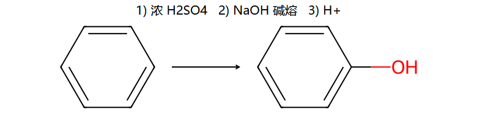
核心：SO₃H 是好的离去基，OH⁻ 在高温下能取代它（亲核芳香取代 SNAr 的简化版）。
醚的 O—R 键比较稳定，常温下不太反应。主要反应是酸催化裂解和自氧化。
RO⁻ + R'-X → R—O—R' + X⁻ （SN2）。前面 10.4 第②条详述。
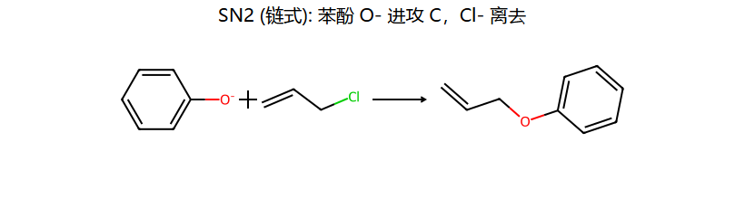
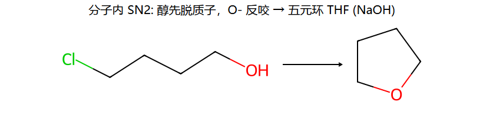
链式：苯酚钠（强亲核 O⁻）从背面进攻烯丙基氯的 CH₂，Cl⁻ 离去 → 苯基烯丙基醚（这是后面 Claisen 重排的底物）。
分子内关环：底物两端"一头 OH、一头 Cl"。NaOH 先把 OH 脱质子成 O⁻，O⁻ 反咬分子内的 C-Cl → 五元环 THF。链长决定环大小：4 C → THF, 3 C → oxetane, 5 C → THP。
(3) (CH₃)₃C-Br + CH₃CH₂CH₂ONa → 异丁烯（不是醚！）
解释：叔卤代 + 强碱 RO⁻ → E2 消除 → 异丁烯 + CH₃CH₂CH₂OH
(4) (CH₃)₃C-ONa + CH₃CH₂CH₂Br → 叔丁基丙基醚 + 丙烯
解释：这次卤代是 1°（可以走 SN2 给醚），但 RO⁻ 是强碱也会夺 β-H 给消除产物（丙烯）。所以两种产物都有。
规律：Williamson 中 RO⁻ 用复杂的，R'-X 用简单的（不能反过来）。
反应：ClCH₂CH₂CH₂CH₂OH + NaOH → 四氢呋喃 (THF)
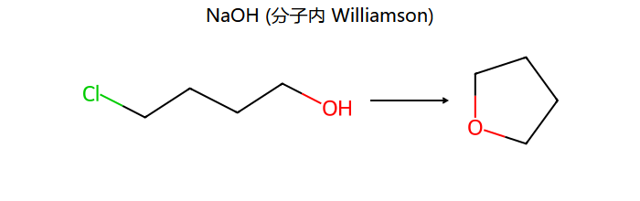
关键：底物里一头是 OH、另一头是 Cl。NaOH 把 OH 变成 O⁻，O⁻ 自己进攻同分子的 C-Cl → 形成 5 元环醚。
这就是分子内 Williamson，专门用来造环醚 (THF / oxetane / dioxane 等)。底物链长决定环大小：4 C → THF (5 环)、3 C → oxetane (4 环)、5 C → THP (6 环)。
同思路用于习题 7(5)：邻羟基苯乙醇 → 2,3-二氢苯并呋喃（先把脂肪 OH 换 Br，然后另一边 phenol-OH 关环）。
机理：
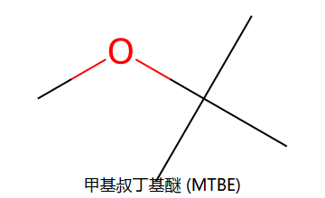
反应：MTBE + H₂SO₄ → 异丁烯 + 甲醇
因为叔丁基侧位阻大，I⁻/酸 不能从那边进攻 → 改走 SN1：先生成叔丁基正离子，然后失质子成异丁烯。
一头 = 叔丁基 → 走 SN1 → 烯（消除）；另一头 = 甲基 → 走 SN2 / 自由离去 → 甲醇
反应：(R)-CH₃-O-CH(CH₃)CH₂CH₃ + HI → CH₃I + (R)-仲丁醇（构型不变）
解释：I⁻ 进攻位阻小的甲基（SN2 翻转甲基的构型，但甲基没有手性）；仲丁基那头变成仲丁醇，C—O 键自始至终没断 → 构型完全保留。
这道题证明了 SN2 在甲基侧发生，仲丁基侧只是变成 OH 一动没动。
(CH₃CH₂CH₂)₂O + 过量 HI → 2 当量 1-碘丙烷 + H₂O
第一份 HI 把醚切成 1-碘丙烷 + 正丙醇；过量 HI 把正丙醇也变成 1-碘丙烷。
THF 是环醚 —— 两次 HI 都从同一个分子进攻：
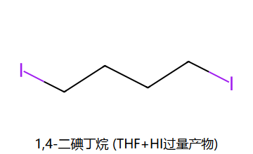
产物 = 1,4-二碘丁烷。
醚长时间暴露在空气中，α-H 被 O₂ 缓慢夺取，生成过氧化物（很危险，加热会爆炸）。
典型：THF + O₂ → 2-羟基过氧化四氢呋喃。所以实验室存放老乙醚 / THF 前要先除过氧化物（用 FeSO₄ 或新蒸）。
环氧的三元环张力大，亲核试剂容易开环。
例：环氧乙烷 + CH₃CH₂MgBr → CH₃CH₂—CH₂—CH₂—OMgBr → (H₂O) → 丁醇
这是 Grignard 增 2 C 法（醛/酮增 1 C，环氧增 2 C）。
H₂C—CHCH₃ (环氧丙烷) + CH₃CH₂MgBr → ... → H₂O 后水解 → 戊-2-醇？
注意：开环位置 —— 在非碱性条件下亲核试剂从取代少的 C进攻（位阻小）→ 得 CH₃CH(OH)—CH₂—CH₂CH₃ = 戊-2-醇。
然后 KMnO₄ → 戊-2-酮。
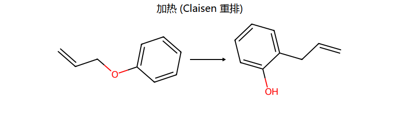
条件极简：只要加热。无需催化剂、溶剂、酸碱。
机理：6 元环过渡态（[3,3]-σ 迁移）—— 旧的 O-CH₂ 键断、新的"邻位 C-CH₂" 键形成。
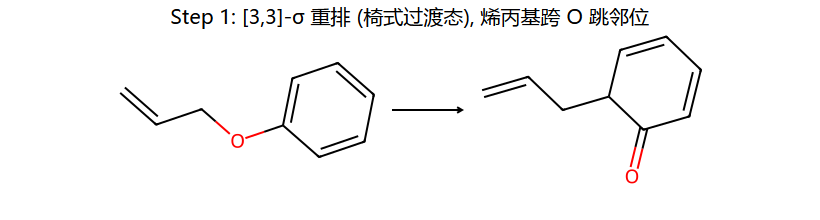
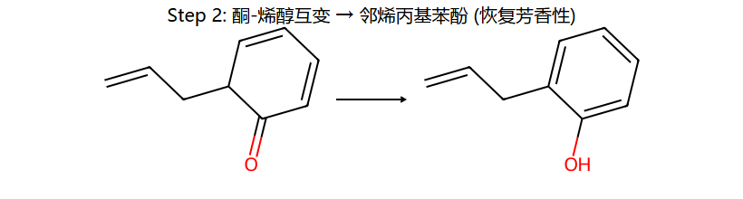
Step 1：六元环过渡态里 3 对电子同时移动（C–O 键断、C=C 双键迁移、新 C–C 键合）→ 得到邻位带烯丙基的 2,4-环己二烯酮（暂时失去芳香性）。
Step 2：酮式 → 烯醇式互变（很快），恢复芳香性，得到稳定的邻烯丙基苯酚。
C₆H₅ONa + ClCH₂CH=CH₂ → A → Δ → B → O₃ → Zn,H₂O → C + D
A = 苯基烯丙基醚；B = 邻烯丙基苯酚（Claisen 重排产物）；C = 邻羟基苯乙醛；D = 甲醛
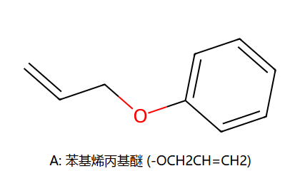
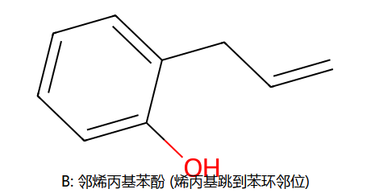
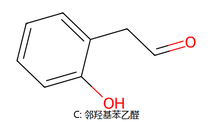
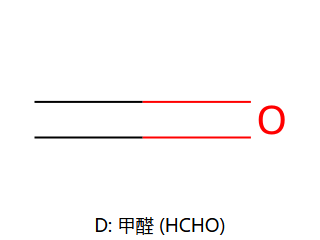
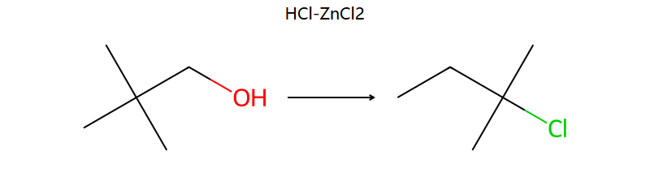
产物是 2-氯-2-甲基丁烷，不是预期的 1-氯-2,2-二甲基丙烷！
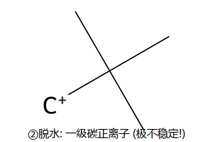
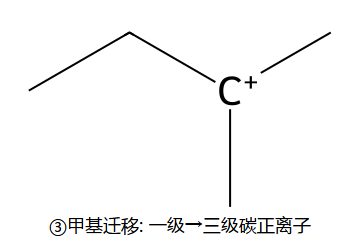
同样是 1,2-迁移，但跳过来的是 H 而不是 CH₃。例如 3-甲基-2-丁醇 + HBr → 2-溴-2-甲基丁烷（仲 → 叔）。
迁移倾向：H ≈ Ar > 烷基 > CH₃（一般情况下；但被立体电子效应限制时另说，见频哪醇）。
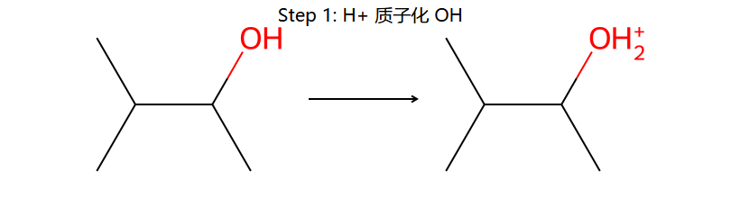
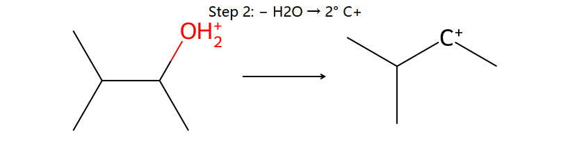
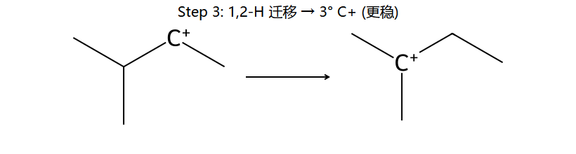
底物 = 频哪醇 (2,3-二甲基-2,3-丁二醇)；产物 = 频哪酮 = 3,3-二甲基-2-丁酮。
缩环：双环丁基二醇 + H⁺ → 螺[3.4]辛-1-酮（习题 9-3）
4 元环的 C-C 键迁移过去，得到张力释放、更稳定的 5 元环 + 4 元环 = 螺环结构。
口诀：迁移基团必须与离去基反平面 (anti-periplanar)。
核心一句话：同样的扁平结构，只因为 OH 朝向不同，决定了谁能跳，决定了缩不缩环。
底物：3-丁烯-2-醇 (CH₃-CH(OH)-CH=CH₂)，仲烯丙醇。
OH 离去后生成烯丙基阳离子，可以共振 — 正电荷可以在 C2 (原位) 或 C4 (双键另一端) 上：
CH₃-CH⁺-CH=CH₂ ⇌ CH₃-CH=CH-CH₂⁺
Br⁻ 进攻两个共振位置都行：
这就是 SN1'（allylic rearrangement）：亲核试剂从烯丙基阳离子的另一端进攻，得到双键位移的产物。
| 排啥 | 背后机理 | 口诀 |
|---|---|---|
| (1) 与 HBr 速度 | 碳正离子稳定性 | 3° > 苄/烯丙基 > 2° > 1° |
| (2) 与 Na 活泼性 | 醇的酸性 | CH₃OH > 1° > 2° > 3° |
| (3) 与 Lucas 试剂 | 碳正离子稳定性 (SN1) | 3° > 苄/烯丙基 > 2° > 1° |
| (4) 氧化难易 | α-C 上 H 数 | 1° > 2° > 3° (易→难) |
| (5) 酸性脱水 | 碳正离子稳定 + 烯烃稳定（共轭好） | 能给共轭烯 > 能给 3° C⁺ > ... |
| (6) 酸性 | 共轭/电子效应 | 酚 > H₂O > 醇 > 醚 |
| (7) 沸点 | 氢键数 + 分子量 | 多元醇 > 一元醇 > 酚 > 醚 |
| (8) 水溶解度 | 氢键数 (类似沸点) | 多元醇 > 一元醇 > 酚 > 醚 |
| 试剂 | 用来鉴别 | 现象 |
|---|---|---|
| FeCl₃ | 酚 vs 非酚 | 酚显紫色/蓝紫色 |
| Lucas (HCl/ZnCl₂) | 3°/2°/1° 醇 | 3° 立刻浑浊，2° 5-10min，1° 几乎不动 |
| HIO₄ | 邻二醇 | 切 C-C 给两 C=O；不切普通醇 |
| HIO₄/AgNO₃ | 邻二醇 (升级版) | HIO₃ + AgNO₃ → AgIO₃↓ 黄色沉淀 |
| 金属 Na | 醇 vs 醚 / 烃 | 醇产生 H₂↑ 气泡，醚/烃不反应 |
| AgNO₃ 醇液 | 烯丙基/苄基卤 (活泼) | 立即 AgX↓ 浅黄色沉淀 |
| 浓 H₂SO₄ | 醚 vs 烷烃 | 醚溶解（O 上质子化），烷烃不溶 |
第一步：加 HIO₄/AgNO₃ → 只有 2,3-丁二醇（邻二醇）产生 AgIO₃ 黄色沉淀。
第二步：剩下三个加 Lucas 试剂：
反应：(CH₃)₃C-CH₂-OH ──HCl/ZnCl₂──► 2-氯-2-甲基丁烷
关键观察：碳骨架变了 → 一定是碳正离子重排。
机理：质子化 → OH₂⁺ 离去 → 一级碳正离子（极不稳定）→ CH₃ 从邻 C 跳过来 → 三级碳正离子 → Cl⁻ 抓住。
详细笔记：第10章_新戊醇重排.md
3 个醇：(A) 烯丙醇 CH₃CH=CHCH₂OH；(B) 远端双键 CH₂=CHCH₂CH₂OH；(C) 2-丁醇
速度由OH 离开后碳正离子的稳定性决定：
答案：A > C > B。详细：第10章_Lucas快慢讲解.md
(S)-1-氘代-1-丙醇 ──TsCl/Py──► OTs (保留) ──NaI/丙酮──► (R)-碘代物（翻转）
大白话：整道题就是 OH → I 分两步。第 1 步把 OH 换成松动的 OTs，第 2 步 I⁻ 把 OTs 踢走。
D 的作用：标记 C 上有 4 个不同基团（创造手性中心），方便用旋光仪观测构型变化。
详细：第10章_氘代醇TsCl_NaI讲解.md
整道题 3 个反应串起来：
详细：第10章_4步合成题讲解.md
1-(羟甲基)环己醇 ──HIO₄──► 环己酮 + 甲醛 ──NaBH₄──► 环己醇 + 甲醇
HIO₄ 像剪刀，剪邻二醇得两 C=O；NaBH₄ 像氢炮，把 C=O 还原成 C-OH。
详细：第10章_HIO4切二醇_NaBH4还原.md
底物 1,2-二甲基-1,2-环己二醇有两种立体（cis vs trans）。同样 H⁺ 催化，但：
原因：迁移基团必须与离去基团反式共平面 (anti-periplanar)。在椅式构象上"轴向位挂的是环 C-C 键 vs CH₃"决定了哪一个迁移。
这是立体电子效应压过迁移倾向的经典例子。
4 个醇：
PhCH(OH)CH₃ — 苄基仲醇PhCH₂CH₂OH — 普通 1° 醇（苯环不挨着 OH）环己基-CH(OH)CH₃ — 普通 2° 醇环己醇 — 普通 2° 醇速度由OH 离去后的碳正离子稳定性决定（HBr 走 SN1）：
答案：A > C > D > B（教材标准答案）
记忆点：苯环只有紧贴 OH 那个 C才能提供共振稳定。隔一个 CH₂ 就彻底没用了——和 Lucas 排序题（5(3)）同样规律。
丁-2-醇快。Lucas 走 SN1，速度由碳正离子稳定性决定（3°≈苄/烯丙基 > 2° > 1°）。
丁-2-醇生成 2° 阳离子，5-10 分钟出现浑浊；丁-1-醇生成 1° 阳离子，室温几乎不反应。
→ 详见 10.3①
不一样！这是典型的"用 HX 导致重排"的例子。
核心规律：仲醇/伯醇与 HX 反应时容易经过碳正离子重排到更稳定的位置；PBr₃/SOCl₂ 不经过碳正离子 → 干净不重排。新戊醇 + HCl/ZnCl₂ 也是同一套（习题 4(10)）。
苯酚强。失去 H⁺ 后：
共振稳定 vs 仅 +I → 酸性差距 10⁶。带 NO₂ 等吸电子基的苯酚酸性更强（如对硝基苯酚 pKa≈7）。
→ 详见 10.2
Br₂/H₂O：2,4,6-三溴苯酚（白色沉淀，定量实验）。机理：H₂O 把酚电离为 ArO⁻（活化能力 ↑10⁶），Br₂ 立刻在三个 o/p 位都上 Br。
Br₂/CS₂：对溴苯酚（主）+ 邻溴苯酚（次），只单溴。CS₂ 不能电离酚。
→ 详见 10.4④
20°C → 邻磺酸（动力学控制）：邻位过渡态能量低，反应快
100°C → 对磺酸（热力学控制）：磺化可逆，邻 ↔ 对 反复转换，最后堆积在更稳定（位阻小）的对位产物上
口诀：低温抢快，高温抢稳。萘 α vs β 磺化也是这套规律。
→ 详见 10.4⑤
条件极简：只要加热。无需催化剂、酸碱、溶剂特殊。
反应物：烯丙基芳基醚（Ar-O-CH₂-CH=CH₂）
产物：邻烯丙基苯酚（烯丙基"跨过 O"跳到苯环邻位，OH 留在原位）
机理：6 元环过渡态（[3,3]-σ 迁移）。如果两邻位都被占，可继续走 para-Claisen。
→ 详见 10.5⑤
产物是 2-氯-2-甲基丁烷（碳骨架变了！）。
机理：质子化 → OH₂⁺ 离去 → 一级碳正离子（极不稳定）→ 旁边 4° C 上一个 CH₃ 带着电子对跳过来 → 三级碳正离子（稳定）→ Cl⁻ 抓住。
这就是 1,2-甲基迁移 (Wagner-Meerwein 重排)。看到 HCl/ZnCl₂ 或浓 H₂SO₄ 且产物骨架对不上 → 必然重排。
→ 详见 10.6①
两者是立体异构体（cis vs trans 二醇）。在椅式构象上，C2 上 OH₂⁺ 占轴向位时：
核心规则：迁移基团必须与离去基团反式共平面（anti-periplanar，~180°）。立体电子效应压过迁移倾向。
→ 详见 10.6③
产物是 1,4-二碘丁烷 + H₂O。
机理：
→ 详见 10.5②
用三个试剂依次：
→ 详见 10.8 鉴别（即习题 8(3)）